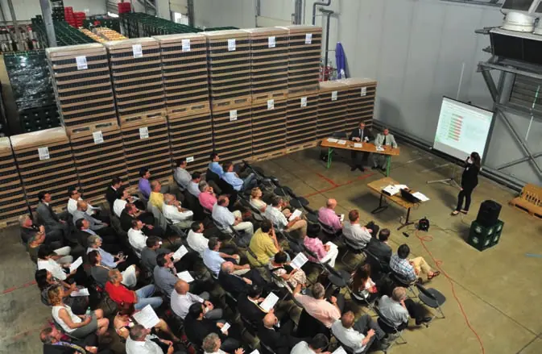
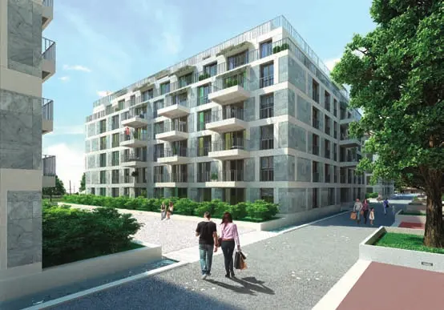
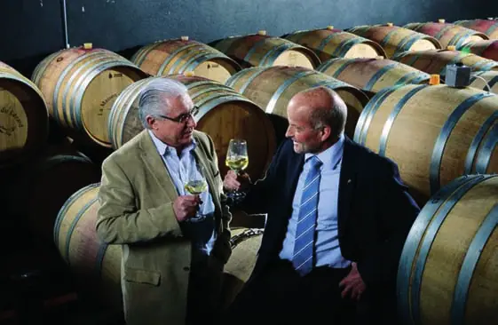

Collectivités · 2016 · Canton de Vaud
Swiss Knowhow – Économie publique (Vaud) 2016
Numéro de janvier 2016 consacré à l’économie publique et aux institutions du canton de Vaud. Il s’ouvre sur les entretiens du conseiller d’État Philippe Leuba, de la directrice de la CVCI Claudine Amstein et du chef de la promotion économique Lionel Eperon, puis présente des institutions publiques et parapubliques (caisse AVS, hautes écoles, IFFP, Interprofession du Gruyère) et des entreprises de services, de formation, de transport et de construction de la région.
Sommaire · 24 articles
 Interview
InterviewLes défis de l’économie vaudoise
Interview du conseiller d’État Philippe Leuba

InterviewPour une fiscalité allégée et la libre circulation des personnes
Interview de Claudine Amstein, Directrice de la Chambre Vaudoise du Commerce et de l’Industrie (CVCI)

« Il faut déployer davantage d’énergie pour obtenir des résultats »
Le service de la promotion économique et du commerce – Rencontre avec Lionel Eperon
 Interview
InterviewLa Caisse cantonale vaudoise de compensation AVS
Interview de Fabienne Goetzinger, Directrice de la Caisse cantonale vaudoise de compensation AVS/AI
 Publireportage
Publireportagechenevartarchitecte – Une architecture d’intégration
Publireportage
 Publireportage
PublireportageCentre d’Etudes et de Transferts Technologiques de la HEIG-VD – CeTT
Un facilitateur entre le milieu académique et l’économie (français et anglais)

École Minerva – Un acteur reconnu de la formation paramédicale
Publireportage

Publireportagede Rham Immobilier – La solidité et le dynamisme
Publireportage
 Publireportage
PublireportageEmch+Berger SA Lausanne – Le goût des projets de grande envergure et complexes
Publireportage
 Publireportage
PublireportageÉcole Internationale GEMS World Academy-Etoy – Des élèves équilibrés au service de la communauté
Balanced students who give back to the community (français et anglais)
 Publireportage
PublireportageHESAV – Haute Ecole de Santé Vaud : un acteur dynamique du système de soins et de la formation
A dynamic player in the healthcare and training system (français et anglais)
 Interview
InterviewLa HEP Vaud, au cœur du tissu universitaire – Enseignant, un métier toujours plus recherché
Entretien avec son recteur, M. Guillaume Vanhulst (français et anglais)

PublireportageHenri Badoux SA – La tradition innovative au service du vin
Innovative Tradition im Dienste des Weines (français et allemand)
 Publireportage
PublireportageL’institut de génie thermique (IGT) – L’énergie comme défi du futur
Energy – the challenge of the future (français et anglais)
 Interview
InterviewInstitut fédéral des hautes études en formation professionnelle IFFP – Des contacts étroits avec les partenaires de la formation professionnelle
Un entretien avec le Prof. Dr Alexandre Étienne, Directeur suppléant de l’IFFP, Directeur régional du site de Lausanne
 Interview
InterviewL’Interprofession du Gruyère – Gardien d’une emblématique tradition de qualité
Die Sortenorganisation Gruyère AOP – Interview de Philippe Bardet (français et allemand)
 Publireportage
PublireportageMontangero & Fils SA – Une dynastie de plâtriers-peintres
Publireportage
 Publireportage
PublireportageTransports de la région Morges Bière Cossonay SA – MBC SA : au service de la mobilité régionale
Publireportage
 Publireportage
PublireportagePort-Franc et Entrepôts de Lausanne – Chavornay – PESA SA
Des vœux dans le monde entier / Shipping throughout the world (français et anglais)
 Interview
InterviewLe Nyon - St-Cergue - NStCM – Une ligne de chemin de fer unique pour une région riche en couleurs
Entretien avec Richard Zaugg, directeur (français et allemand)
InterviewTransports publics de la région nyonnaise - TPN SA – Une offre de qualité pour voyager en toute liberté
Ein hochwertiges und flexibles Angebot (français et allemand)
 Publireportage
PublireportageInstitut Suisse de la Soudure - SWI – Une soudure ne se vérifie pas, elle se valide !
Welding isn’t verified, it’s validated! (français et anglais)
 Publireportage
PublireportageTekhne SA – Le spécialiste des projets complexes
Publireportage
Vaudoise Assurances – L’esprit mutualiste au service du marché suisse
Interview de Philippe Hebeisen, Directeur général, CEO
Entreprises de ce numéro · 25
Caisse cantonale vaudoise de compensation AVS (CCVD)
Assurances sociales – institution de droit public
Centre d’Etudes et de Transferts Technologiques de la HEIG-VD (CeTT)
Recherche appliquée et transfert technologique
Chambre Vaudoise du Commerce et de l’Industrie (CVCI)
Chambre de commerce
chenevartarchitecte – atelier d’architecture et d’espaces bâtis
Bureau d’architecture
de Rham Immobilier
Gérance et services immobiliers
Département de l’économie et du sport – État de Vaud
Administration cantonale – économie et sport
École Minerva Sàrl
École de formation paramédicale

Emch+Berger SA Lausanne
Ingénierie, planification et management de projets

Fondation Bartimée
Institution de traitement et de réinsertion des personnes dépendantes
GEMS World Academy International School-Etoy
École internationale privée
Haute Ecole de Santé Vaud (HESAV)
Haute école de santé
Haute Ecole Pédagogique Vaud (HEP Vaud)
Formation des enseignants
Henri Badoux SA (Badoux-Vins)
Viticulture et négoce de vins
Institut de Génie Thermique (IGT) de la HEIG-VD
Recherche et formation en énergie

Institut fédéral des hautes études en formation professionnelle IFFP
Formation et recherche en formation professionnelle
Interprofession du Gruyère (IPG)
Organisation interprofessionnelle fromagère
Montangero & Fils SA
Plâtrerie-peinture
NStCM – Chemin de fer Nyon-St-Cergue-Morez
Transport ferroviaire
Port-Franc et Entrepôts de Lausanne – Chavornay – PESA SA
Transport, entreposage et dédouanement

Service de la promotion économique et du commerce – État de Vaud
Administration cantonale – promotion économique
Swiss Welding Institute – Institut Suisse de la Soudure (SWI)
Formation, recherche et expertise en soudage

Tekhne SA
Planification générale et direction de projets de construction

Transports de la région Morges-Bière-Cossonay – MBC
Transports publics
Transports publics de la région nyonnaise SA (TPN)
Transports publics
Vaudoise Assurances
Assurances
Aucun résultat.